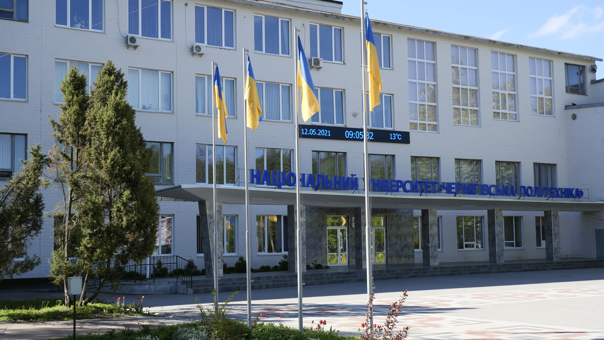

Привіт! Мене звати Микита. На данний момент я проживаю в місті Чернігів та навчаюсь в Національному Університеті "Чернігівська Політехніка"
1 / 5

2 / 5

Набір навичок у мене поки що невеликий, але я активно розвиваюсь в сфері програмування. Особлива заціккавлений в Python розробці, в тому числі с сайтів. Так, це не стандартно але мені це подобається)
3 / 5
Щоб забеспечити себе самостійно, я вже працюю в одній із компаній менеждером технічнох підтримки. Також, у мене із важкістю, але вистачає часу проходити курси Linux та англійської.